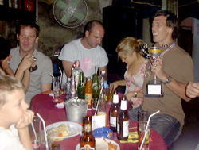
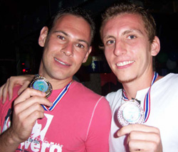
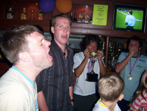
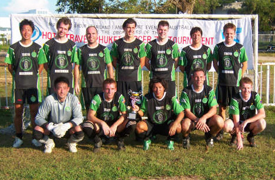

|
Phuket Thailand, Sun 26th Nov. It was the Hibs 3rd attempt at the 4th running of the Phuket 7s and after getting knocked out in the plate semi-final in 2004 with 6 players, the cup semi-final in 2005 with 9 players, we were hoping to go all the way in 2006 with 12 players.
The Phuket 7s has grown each year and 2006 saw a record 40 teams enter from 13 different countries. He Hibs and Celts flew the flag for the TML and Japan. We had our strongest squad yet, with quality players Trevor Vail, Dave Speirs and Jimmy Aschner making the trip from Singapore, Taiwan and Sydney respectively. Ike, Jay, Steve and Yohei were core Hibs players making the trip for the first time, to join Graham Speirs, Kuni K, Hitoshi and Bevan who were all making their third consecutive appearance. Josh was making his second. Honourable mention to Barry Griffin who despite injuring his knee flew in all the way from Sydney for a couple of nights on the lash. This was a strong squad in anyone’s language.
Day One
Hibs V Orchard Rovers (Singapore)
4-0
Jimmy (Ike), Steve (Bevan), Steve (Yohei), Yohei (Ike)
The Orchard rovers were a bit of a drinking team but fought hard throughout. Ike played well down the left creating two goals. Steve scored a brace with a nice volley and a headed corner. Yohei struck his goal as sweet as you like and Jimmy tapped in from close range.
Hibs Vs Phuket Morning Star
1-0
Ike (Yohei)
Phuket Morning Star had won the Pattaya 7s and had a lively squad of young fit and skilful players. The match was quite even; a great diagonal ball from Yohei saw Ike head in on the bounce from the back post. Hitoshi made one of a string of quality saves readjusting after a deflection to save while on the ground.
Hibs Vs Bangkok German All Stars
0-2
This was a wake up call for us. We went in thinking we would win 3 or 4 nil as they GAS had been beaten 4-0 by Phuket. We got a fright when we went down 1-0 and never recovered. The second goal saw us caught too far up field at the back. In 7s each players tends to get only 3 or 4 possessions per game and too many wasted ours and did not work hard off the ball.
Hibs Vs Calcutta Cricket Club

4-0
Jimmy (Ike), Yohei, Trevor (Kuni K), Yohei (Bevan)
We needed to win this game well to ensure progression to the cup. We went up 3-0 before half time, with Ike gifting Jimmy another and Trev scoring a great diving header (noser?) from a corner. Yohei played well and deserved his brace.
We had secure progression into the cup but we felt we had not played as well as we could and were all somewhat disappointed on the Saturday night. We watched all the days’ games Josh’s girl had recorded with Hitoshi’s camera in our bar before a midnight curfew.
Day 2
Cup Quarterfinal
Hibs V Wembley Downs (Australia)
2-0
Bevan (Ike), Kuni K (Bevan)
We were all well up for this game and we put on one of our best performances of the weekend. Only scrambling defence saw us not score 4 or 5. We scored the first after Steve broke down the right and thumped a shot above the keeper that he did well to parry onto the bar, Ike brought the rebound down well and floated in a waist high pass to Bevan who brought it down and tapped in past the keeper. Kuni K scored the second after Bevan’s under-hit through ball somehow made it’s way through to Kuni who finished his one on one well back post.
Cup Semi Final
Hibs V U-Team (Shanghai)
1-0
Jimmy
This team were the pre tournament favourite, boasting several ex pros and a good record in 7s tournaments around Asia. We played a great game outclassing them all over the park. Jimmy had a Hibs player’s tame shot for goal bounce into his thigh from close range and he showed predatory instincts and a sharp turn to lift it into the roof of the net with his second touch. A true striker’s goal. A back line was fantastic in this game, Josh was MOTM winning the ball time and time again and carrying it up field and a pass completion rate that must have been close to 100%. Trev made a few critical interventions and Jay was solid as a rock, as he was all tournament.
Cup Final
Hibs Vs Phuket morning Star
0-0
Sudden death PK
Trevor
We returned to our foes from Day 1 group phase in the final and we didn’t play our best game. Hitoshi made an amazing save with his feet off the line when everyone thought the ball was in. A free kick from 20 yards was heading for the corner until Hitoshi flew through the air to save it spectacularly. The crowd gave him a big cheer for that one. We had a few chances of our own with Steve twice teeing up Bevan who did not time either shot and Jimmy had a break down field that he shot well on target but a back post pass would have been a certain goal.
Down to PKs, the rule was once both teams had taken equal number of pens the side ahead wins. Trevor showed the most confidence and stepped up first for the Hibs. He pushed it to the keepers left high and close to the post; despite the keeper diving early he had no chance. 1-0. With Hitoshi in goal we felt confident and he did not let us down. Diving to his right to save a weak penalty low down. The crowd went wild group hugs, jumping up and down in a circle etc etc.

The beers flowed at the ground and we kept them up for the Tuk-Tuk ride home, singing come on you Hibs in Green at the lights. Back to hotel pool bar and the atmosphere was awesome everyone in the pool celebrating – what bars closing – better make that 24 Singha’s please, courtesy of Graham and Trev’s genorousity. The awards party was great, too bad Jay was sitting on the beach by himself eating a jar of olives while it was going on. Playing extra games for Sid’s team and too many beers on an empty stomach had him searching for answers. The celebrations went on until 4am, we watched the day’s game – and I reckon despite Hitoshi’s saves we actually had the better of the final. Steve had us in stitches all night, but the handstand push up that never quite got beyond a handspring into the wall of the nightclub followed by a two minute head stand at 2am was the highlight. Yohei was still looking for a girl who was not “on the job” at 4am. None were to be found.
All in all it was a special weekend and a great tour. Back to the job of defending our TML title. Let’s do it again next year!
Report by Bevan Colless
|